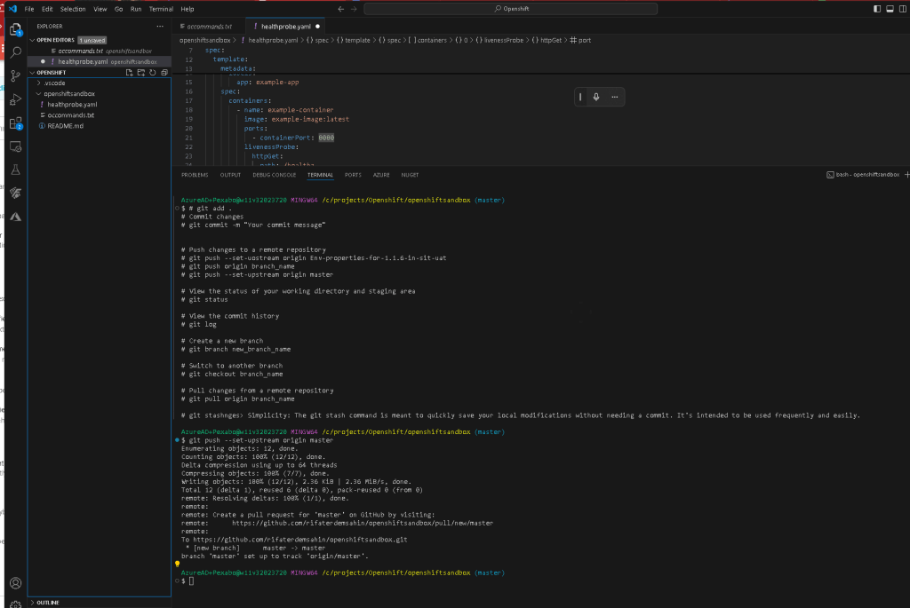

Mastering Git: A Quick Guide to Basic Commands and Comment Outs

--dont remember use text blaze---------
Git is an essential tool for version control and collaboration in software development. Understanding the basic commands and how to efficiently manage your commits can significantly streamline your workflow. In this post, we'll cover some fundamental git commands, the use of comment outs, and how Text Blaze can help you remember and paste commands effortlessly.
Basic Git Commands
Here are some of the essential git commands that you need to know:
-
Initializing a Repository
git initThis command creates a new Git repository. It can be used to convert an existing, unversioned project to a Git repository or initialize a new, empty repository. -
Staging Changes
git add .This stages all the changes in the current directory for the next commit. The dot.symbolizes the current directory. -
Committing Changes
git commit -m "Your commit message"Commits the staged changes with a message. It's crucial to write meaningful commit messages to keep track of changes. -
Pushing to a Remote Repository
git push --set-upstream origin masterThis pushes your changes to the remote repository and sets the upstream branch for subsequent pushes. -
Viewing Commit History
git logShows the commit history for the current branch. -
Creating and Switching Branches
git branch new_branch_name git checkout new_branch_nameThese commands create a new branch and switch to it. Branching is useful for developing new features independently from the main codebase. -
Pulling Changes from a Remote Repository
git pull origin branch_nameThis fetches and merges changes from the specified branch of the remote repository. -
Stashing Changes
sh git stash
Temporarily stores all the modified tracked files, allowing you to switch branches without committing changes.
Using Comment Outs in Code
Comment outs are a great way to annotate your code and leave notes for yourself and other developers. In most programming languages, comments are ignored by the compiler or interpreter and are purely for human reference.
-
Single-line Comments: In many languages, single-line comments are denoted by
//.
js // This is a single-line comment -
Multi-line Comments: Denoted by
/* */for block comments in languages like C, JavaScript, etc.
js /* This is a multi-line comment */
Enhancing Productivity with Text Blaze
Remembering all these commands can be a hassle. That's where Text Blaze comes in handy. Text Blaze allows you to create snippets of text that can be quickly inserted into your console or code editor. You don't need to memorize these commands; simply set up your snippets in Text Blaze, and you can paste them as needed. Additionally, you can include these snippets as commented out sections to keep your code clean and organized.
For example, you can have a snippet like this:
Initialize a new Git repository
git init
Add all changes to the staging area
git add .
Commit the changes with a message
git commit -m "Initial commit"
Set the upstream repository and push the changes
git push --set-upstream origin master
Check the commit history to ensure everything is in order
git log
Create a new branch for a feature
git branch feature_branch
git checkout feature_branch
Make changes and stage them
git add .
Commit the changes with a message
git commit -m "Add new feature"
Push the changes to the remote repository
git push origin feature_branch
With Text Blaze, you can insert these commands into your console with a simple shortcut, and they will be ready to execute. This approach saves time and ensures you always have the correct command at hand.
By following this structured approach to using git and incorporating comments in your code, you can maintain a clean and efficient workflow. Happy coding!
Feel free to modify or expand upon this draft to better suit your audience or include additional details as needed.
Imported from rifaterdemsahin.com · 2025